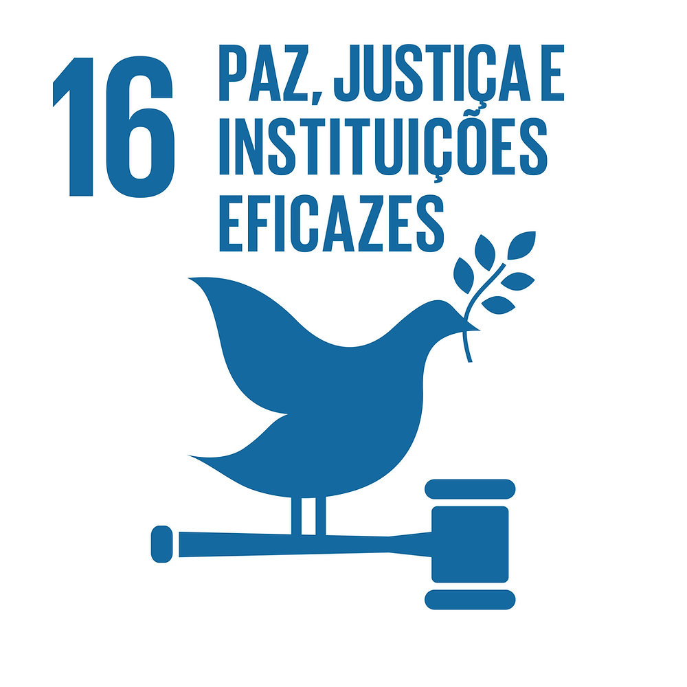

ODS16:
O ODS 16 é o 16º Objetivo de Desenvolvimento Sustentável da ONU, que busca "Paz, Justiça e Instituições Eficazes". Ele enfoca a promoção da paz, do Estado de Direito, do acesso à justiça, da transparência institucional e da redução da violência. A realização desse objetivo é crucial para construir sociedades equitativas, seguras e sustentáveis, contribuindo para o progresso global e a proteção dos direitos humanos.
Como Funciona?
Ele funciona como um guia global para promover a paz, a justiça, o Estado de Direito e instituições eficazes em todo o mundo. Aqui está como ele funciona:
- Definição do Objetivo: O ODS 16 estabelece a visão de um mundo mais pacífico, justo e equitativo. Ele reconhece que a paz, a estabilidade, o acesso à justiça e a governança eficaz são fundamentais para alcançar o desenvolvimento sustentável em todas as suas formas.
- Metas e Indicadores: O objetivo é apoiado por metas específicas e indicadores mensuráveis que ajudam os países a acompanhar seu progresso em direção a alcançar o ODS 16. Esses indicadores abrangem áreas como a redução da violência, a promoção da igualdade perante a lei, o fortalecimento das instituições e a prevenção de conflitos.
- Implementação: Para alcançar o ODS 16, os países e as organizações precisam tomar medidas concretas. Isso pode incluir a criação de políticas e leis que promovam a paz, o acesso à justiça e a governança eficaz. Além disso, a promoção da participação cívica, o combate à corrupção e o fortalecimento das instituições são componentes-chave da implementação.
- Parcerias e Cooperação: A Agenda 2030 enfatiza a importância da cooperação global. Países, organizações não governamentais, setor privado e a sociedade civil trabalham juntos para atingir o ODS 16, compartilhando recursos, conhecimento e melhores práticas.
- Interconexões: O ODS 16 não é isolado, mas interage com outros Objetivos de Desenvolvimento Sustentável. Por exemplo, promover a paz e a justiça também pode contribuir para a erradicação da pobreza, a igualdade de gênero, a educação de qualidade e a ação climática. Portanto, o progresso em direção ao ODS 16 tem um impacto positivo em muitos outros ODS.
- Acompanhamento e Revisão: Um dos princípios fundamentais da Agenda 2030 é a revisão periódica do progresso em direção aos ODS. Isso envolve a coleta de dados e a análise do progresso feito em direção ao ODS 16, permitindo ajustes nas estratégias e políticas conforme necessário.
Possíveis soluções:
Você tem uma ideia ou uma solução para
os problemas ou promover a paz?
Clique no botão a seguir e dê suas
sugestões!!
- Identificação do Problema: Comece identificando o problema relacionado ao ODS 16
- Análise da Causa Raiz: Descubra as causas subjacentes do problema.
- Definição de Metas Claras: Estabeleça metas mensuráveis para resolver o problema.
- Desenvolvimento de Estratégias: Identifique ações concretas para alcançar suas metas.
- Mobilização de Recursos: Determine os recursos necessários.
- Implementação: Coloque suas estratégias em prática e acompanhe o progresso.
- Avaliação e Monitoramento: Estabeleça um sistema de monitoramento.
- Aprendizado e Adaptação: Ajuste as estratégias com base nos resultados.
- Envolvimento da Comunidade: Inclua a comunidade afetada no processo.
- Advocacia e Sensibilização: Promova a conscientização sobre o ODS 16.
- Colaboração Global: Participe de esforços globais para promover a paz, a justiça e instituições eficazes.
Links:
Github Pages:
------------------------------------------
Outras ODS:

--------------------------------
Saiba mais sobre ODS 16:
